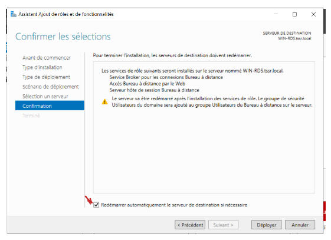

Installation

Choisir Installation des services Bureau à distance

Choisir Démarrage rapide

Choisir Déploiement de bureaux basés sur une session

Choisir le serveur sur lequel on souhaite installer

Cocher la case Redémarrer automatiquement le serveur de destination si nécessaire puis cliquer sur Déployer